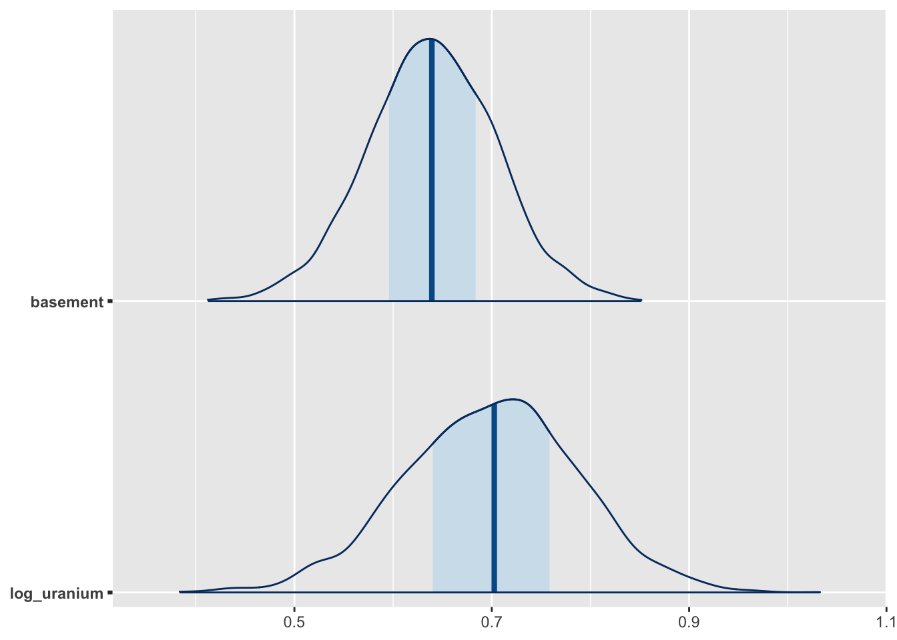
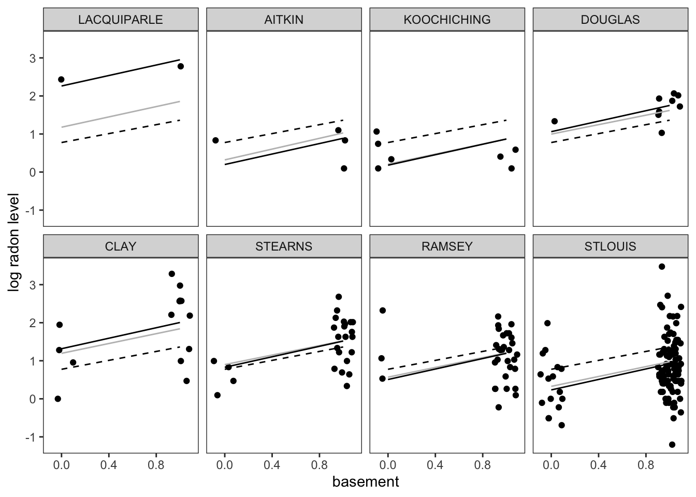
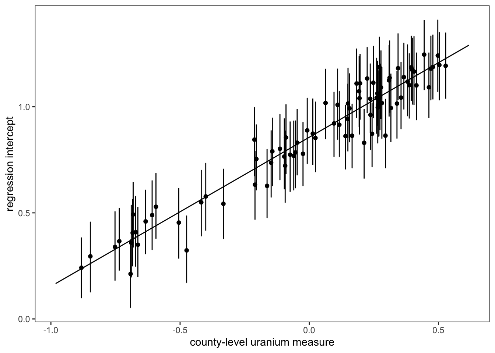

library(ggplot2)
library(tidyr)
library(dplyr)
library(bayesplot)
library(rstanarm)
library(purrr)
library(tidybayes)
library(dplyr)Re-Creating the radon example
First, we will load the relevant packages:
Data Preparation
First, lets take the raw radon dataset from the rstanarm package and make some minor modifications and additonal datasets that we’ll use for the purposes of modeling and visualizing these data.
First, since each row of radon dataset includes an observation of a single house, we need to work backwards to obtain the county-level soil uranium measure for each individual county. This is pretty straightforward to do using the dplyr package:
county_uranium <- radon %>%
group_by(county) %>%
summarize(log_uranium = first(log_uranium)) We will also make a second dataset that we will use later on for the purposes of prediction. This contains 2 entries for each county, representing observations taken in the basement or on the first floor.
county_uranium_tmp_1 <- county_uranium
county_uranium_tmp_1$floor <- 0
county_uranium_tmp_2 <- county_uranium
county_uranium_tmp_2$floor <- 1
county_dummy_df <- rbind(county_uranium_tmp_1, county_uranium_tmp_2)
## In the original dataset, basements are coded as the 0th floor, so we are
## reversing this so that adjusting for basement will give us the appropriate estimate
county_dummy_df$basement <- 1-county_dummy_df$floor
## Now, lets make a final prediction dataset that includes only basement observations
pooled_predict_df <- county_dummy_df %>%
filter(basement == 0)
## Lets also modify the `radon` dataset to have a basement variable
radon$basement <- 1 - radon$floor🚪 Door 1: Full pooling!
m1 <-lm(log_radon ~ basement, data = radon)
summary(m1)
Call:
lm(formula = log_radon ~ basement, data = radon)
Residuals:
Min 1Q Median 3Q Max
-3.07857 -0.52950 0.02388 0.53970 2.51502
Coefficients:
Estimate Std. Error t value Pr(>|t|)
(Intercept) 0.77599 0.06388 12.148 <2e-16 ***
basement 0.58642 0.06996 8.382 <2e-16 ***
---
Signif. codes: 0 '***' 0.001 '**' 0.01 '*' 0.05 '.' 0.1 ' ' 1
Residual standard error: 0.7901 on 917 degrees of freedom
Multiple R-squared: 0.07116, Adjusted R-squared: 0.07015
F-statistic: 70.25 on 1 and 917 DF, p-value: < 2.2e-16Now, we’ll save the fully pooled predictions for each condition to our dataset:
county_dummy_df$pooled_pred <- predict(m1, county_dummy_df)🚪 Door 2: No pooling
pred_data <- data.frame(basement = c(0, 1))
no_pool_m <- lm(log_radon ~ basement + county, data = radon)
county_dummy_df$no_pool_pred <- predict(no_pool_m, county_dummy_df)🚪 Door 3: Partial Pooling
m2 <- stan_lmer(log_radon ~ basement + log_uranium + (1 | county), data = radon)
posterior <- as.matrix(m2)
## Gives posterior median for each prediction.
county_dummy_df$partial_pred <- posterior_predict(m2, county_dummy_df) %>%
apply(2,median) g2 <- mcmc_areas(posterior, pars = c("basement", "log_uranium"))
plot(g2)
Figure 1
fig_1_counties <- c("LACQUIPARLE", "AITKIN", "KOOCHICHING", "DOUGLAS", "CLAY", "STEARNS", "RAMSEY", "STLOUIS")
county_df_fig_1 <- county_dummy_df %>%
filter(county %in% fig_1_counties) %>%
mutate(county2 = factor(county, levels = fig_1_counties)) %>%
arrange(county)
pred_counties <- radon %>% filter(county %in% fig_1_counties) %>%
mutate(county2 = factor(county, levels = fig_1_counties))
g <- ggplot() +
geom_jitter(data = pred_counties, aes(x=basement, y = log_radon, group=county2),height=0, width=0.1) +
geom_line(data = county_df_fig_1, aes(x=basement, y=partial_pred, group=county2), linetype="solid", colour="gray") +
geom_line(data= county_df_fig_1, aes(x=basement, y = no_pool_pred, group = county2)) +
geom_line(data=county_df_fig_1, aes(x=basement, y = pooled_pred, group = county2), linetype="dashed") +
facet_wrap(vars(county2), nrow = 2) +
xlab("basement") +
ylab("log radon level") +
theme_bw() +
theme(panel.grid.major = element_blank(), panel.grid.minor = element_blank())
plot(g)
Figure 2
dd <- predicted_draws(m2, county_dummy_df) %>%
median_qi(.width=0.17) %>%
filter(floor == 1)
uranium_coefs <- gather_draws(m2, c(`(Intercept)`, log_uranium)) %>% median_qi()
log_uranium_range <- seq(min(county_uranium$log_uranium) - .1, max(county_uranium$log_uranium) + .1, by = 0.1)
pred_log_radon <- uranium_coefs$.value[1] + uranium_coefs$.value[2]*log_uranium_range
median_radon_pred <- data.frame(log_uranium = log_uranium_range, .prediction = pred_log_radon)
g <- ggplot(dd) +
geom_point(aes(x = log_uranium, y = .prediction, group = county)) +
geom_line(data = median_radon_pred, aes(x=log_uranium, y = .prediction)) +
geom_errorbar(aes( x= log_uranium, y= .prediction, ymin = .lower, ymax = .upper)) +
theme_bw() + theme(panel.grid.major = element_blank(), panel.grid.minor = element_blank()) +
xlab("county-level uranium measure") +
ylab("regression intercept")
plot(g)